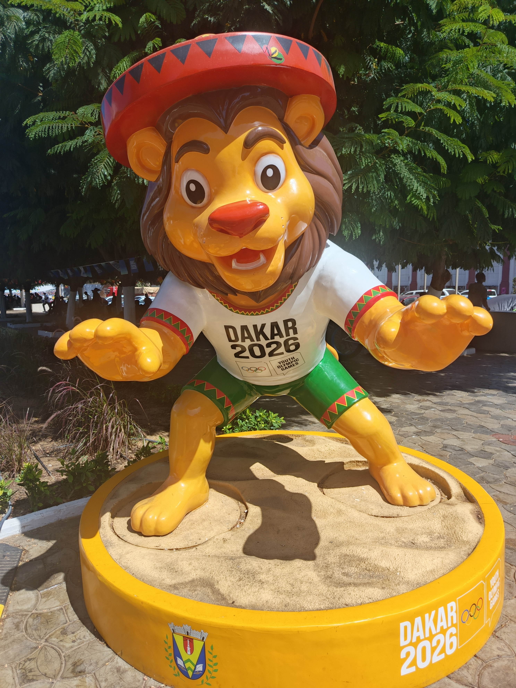

Os Jogos Olímpicos da Juventude Dakar 2026 chegaram ao fim nesta sexta-feira, 13 de novembro, no Senegal, com sete medalhas conquistadas pelo Time Brasil. A delegação, formada por 35 atletas distribuídos em 16 modalidades, terminou sua participação com três ouros, três pratas e um bronze, além de resultados importantes em outras disputas.
A última conquista brasileira aconteceu no handebol de praia masculino. Após chegar invicta à decisão, a seleção perdeu para a Alemanha por 2 sets a 0, com o segundo período decidido no gol de ouro e garantiu a medalha de prata.
A participação brasileira também foi marcada pelos títulos de Clarisse Vallim, no judô, Pyetro Henrico Souza, no atletismo, e Sara dos Santos, no boxe. A natação, o skate street e o handebol de praia completaram a relação de modalidades que levaram o Brasil ao pódio.
Realizada entre 31 de outubro e 13 de novembro, a quarta edição dos Jogos Olímpicos da Juventude de Verão foi a primeira disputada no continente africano, reunindo jovens atletas de diferentes países em Dakar.
A final do handebol de praia
O Brasil entrou em quadra buscando a primeira medalha de ouro de sua história no handebol de praia dos Jogos Olímpicos da Juventude. Pela frente estava a Alemanha, que havia chegado à decisão sem derrotas.
No primeiro set, os alemães tiveram um aproveitamento ofensivo de 94%, convertendo 15 das 16 finalizações. Luuk Seibert marcou 12 pontos no período, enquanto Giovani Brandão, Luiz Ferreira e Raphael Martins concentraram a maior parte da produção brasileira. A Alemanha venceu por 29 a 20.
O segundo set foi mais equilibrado. O Brasil chegou a construir uma vantagem de quatro pontos, mas a Alemanha reagiu com uma sequência de 8 a 2 e passou à frente. A disputa permaneceu aberta até os segundos finais.
Com o placar empatado em 14 a 14, o goleiro brasileiro Tiago Azevedo realizou uma defesa decisiva quando faltavam dois segundos, impedindo que a Alemanha encerrasse a partida naquele momento.
A igualdade levou a decisão ao gol de ouro. Na jogada decisiva, Luuk Seibert marcou para os alemães, que fecharam o segundo set em 15 a 14 e conquistaram o título.
Seibert terminou a final como maior pontuador da Alemanha, com 17 pontos. Pelo Brasil, Giovani Brandão foi o principal destaque ofensivo, com 18 pontos.
A campanha brasileira até a medalha de prata
A seleção masculina chegou à final com cinco vitórias consecutivas, encerrando a competição com cinco triunfos e apenas uma derrota.
Confira todos os resultados brasileiros:
- Fase de grupos: Brasil 2 x 0 Porto Rico
- Fase de grupos: Brasil 2 x 1 Senegal
- Fase de grupos: Brasil 2 x 0 Hungria
- Quartas de final: Brasil 2 x 0 Ilhas Cook
- Semifinal: Brasil 2 x 1 Hungria
- Final: Brasil 0 x 2 Alemanha
A conquista da medalha de prata brasileira foi inédita na modalidade, que fez sua estreia no programa dos Jogos Olímpicos da Juventude.
Todas as sete medalhas do Brasil em Dakar 2026
A campanha brasileira terminou com pódios em seis modalidades. A natação foi responsável por duas medalhas, ambas conquistadas por Ana Júlia Amara.
Medalhas de ouro — 3
- Clarisse Vallim — judô feminino, categoria até 78 kg.
- Pyetro Henrico Souza — atletismo, arremesso do peso masculino.
- Sara Campos — boxe feminino, categoria até 57 kg.
Medalhas de prata — 3
- Duda Ribeiro — skate street feminino.
- Ana Júlia Amaral — natação, 200 metros borboleta.
- Seleção brasileira masculina — handebol de praia.
Medalha de bronze — 1
- Ana Júlia Amaral — natação, 100 metros borboleta.
A campanha confirmou a presença de jovens brasileiros entre os medalhistas em modalidades individuais e coletivas, com conquistas distribuídas desde o primeiro dia de disputas até a última final.
Os principais destaques do Time Brasil
A judoca Clarisse Vallim conquistou o primeiro ouro brasileiro em Dakar, na categoria até 78 kg. Bicampeã mundial cadete, a atleta venceu seus três combates por ippon, incluindo a final contra a russa Anastasiia Dobrovolskaia.
Na luta decisiva, Clarisse conseguiu uma imobilização nos segundos finais e assegurou o título. A brasileira foi a única representante do país no judô durante a competição.
Pyetro Souza vence o arremesso do peso
No atletismo, Pyetro conquistou o ouro com a marca de 19,79 metros no arremesso do peso masculino.
O paulista de 17 anos superou o jamaicano Xhaevlon Kelly, medalhista de prata com 19,34 metros.
A medalha coroou uma temporada de crescimento para o atleta, que também conquistou o título brasileiro sub-18 em 2026.
Sara dos Santos faz história no boxe feminino
A gaúcha Sara dos Santos, também conhecida como Sara Campos, conquistou o ouro na categoria até 57 kg, tornando-se a primeira brasileira campeã no boxe feminino da história dos Jogos Olímpicos da Juventude.
Natural de Uruguaiana, Sara venceu quatro combates até o título. Na decisão, derrotou a cazaque Aknur Tursyngali por 4 a 1 na pontuação dos árbitros.
Duda Ribeiro conquista prata no skate street
Aos 16 anos, Duda foi um dos destaques brasileiros no skate street feminino. A atleta de Maricá, no Rio de Janeiro, liderou a fase classificatória e terminou a final com 138,28 pontos.
A chinesa Zhu Yuanling conquistou o ouro com 149,82 pontos, enquanto a canadense Evie Pritchard completou o pódio.
Durante a competição, Duda também recebeu o apoio de Rayssa Leal, medalhista olímpica que participou dos Jogos em Dakar como embaixadora.
Ana Júlia Amaral conquista duas medalhas na natação
Ana Júlia foi a única integrante do Time Brasil a conquistar duas medalhas individuais em Dakar.
A nadadora abriu o quadro brasileiro com o bronze nos 100 metros borboleta, registrando 1min00s49. Posteriormente, voltou ao pódio com a prata nos 200 metros borboleta, em 2min13s01.
Aos 17 anos, Ana Júlia encerrou os Jogos como um dos principais nomes da delegação, reforçando a presença brasileira nas provas de borboleta.
Resultados além das medalhas
O desempenho do Time Brasil em Dakar também incluiu resultados próximos ao pódio.
Na natação, Luiz Daniel Moura terminou em quarto lugar nos 200 metros medley masculino. O brasileiro inclusive melhorou seu recorde pessoal durante as eliminatórias.
No vôlei de praia masculino, a dupla Bruno Fellipe e Gabriel Campos alcançou a disputa pelo bronze, mas terminou em quarto lugar após perder para os australianos Thomas Turner e Ryan Edgar por 2 sets a 0.
Os resultados demonstraram a competitividade da delegação também em provas nas quais o Brasil não conquistou medalhas.
Quadro de medalhas final
A China liderou o quadro geral de medalhas, seguida pelo Japão e pela Rússia. O Senegal também apareceu entre os destaques, com cinco ouros e sete bronzes.
| Posição | País | Ouro | Prata | Bronze | Total |
|---|---|---|---|---|---|
| 1º | China | 18 | 8 | 8 | 34 |
| 2º | Japão | 11 | 8 | 10 | 29 |
| 3º | Rússia | 8 | 4 | 2 | 14 |
| 4º | Egito | 6 | 1 | 6 | 13 |
| 5º | Etiópia | 5 | 3 | 0 | 8 |
| 6º | Senegal | 5 | 0 | 7 | 12 |
| 7º | França | 4 | 5 | 4 | 13 |
| 8º | Quênia | 4 | 2 | 0 | 6 |
| 9º | África do Sul | 3 | 5 | 3 | 11 |
| 10º | Croácia | 3 | 4 | 0 | 7 |
| 11º | Ucrânia | 3 | 3 | 4 | 10 |
| 12º | Brasil | 3 | 3 | 1 | 7 |
A classificação considera primeiro o número de ouros, depois as pratas e, por último, os bronzes. Dessa forma, países com menos medalhas no total podem terminar à frente de delegações com mais pódios.
A primeira edição olímpica na África
Os Jogos Olímpicos da Juventude Dakar 2026 representaram um marco para o movimento olímpico. Pela primeira vez, o continente africano recebeu um evento esportivo olímpico, reunindo aproximadamente 2.700 atletas de 14 a 17 anos, representantes de 204 comitês olímpicos nacionais, além de uma equipe de refugiados.
Realizada entre 31 de outubro e 13 de novembro, a quarta edição de verão dos Jogos contou com 25 modalidades competitivas, distribuídas entre Dakar, Diamniadio e Saly. O programa incluiu atletismo, natação, ginástica, judô, boxe, skate, basquete 3x3, breaking e handebol de praia, além de atividades culturais e educativas.
A competição também marcou a primeira participação de uma equipe de refugiados nos Jogos Olímpicos da Juventude e alcançou a igualdade de gênero na distribuição das vagas e provas do programa esportivo.
Senegal faz história diante da torcida
O país anfitrião protagonizou alguns dos momentos mais importantes da competição. Um deles aconteceu no basquete 3x3 masculino, quando Senegal derrotou a Lituânia por 14 a 13 na prorrogação e conquistou uma medalha de ouro histórica.
A cesta decisiva foi marcada por Papa Mamadou Cissé, de 16 anos. No torneio feminino, as senegalesas também chegaram ao pódio e conquistaram o bronze.
Outro destaque foi Marie Sarr, campeã do taekwondo feminino até 55 kg. Aos 16 anos, a atleta conquistou o ouro ao derrotar a tunisiana Yasmine Haouani, ampliando o protagonismo do país anfitrião na competição.
China, Japão e novos talentos do atletismo
Entre as delegações de maior destaque estiveram China e Japão, que ocuparam as primeiras posições do quadro de medalhas. Na ginástica artística, os chineses venceram as três disputas por equipes, enquanto os russos conquistaram os dois títulos individuais, com Daniil Smirnov e Polina Dmitrieva.
No atletismo, a Nigéria se destacou nas provas de velocidade. Gift Bright conquistou o ouro nos 100 metros masculinos com o recorde dos Jogos de 10s28, enquanto Rosemary Nwankwo venceu a final feminina com 11s16, beneficiada por vento acima do limite regulamentar para homologação de recordes.
O Quênia também teve resultados expressivos nas provas de resistência, com os títulos de Abigael Kosgei, nos 2.000 metros com obstáculos, e Enock Tuitoek, nos 3.000 metros.
O que representou a participação brasileira em Dakar
Os Jogos Olímpicos da Juventude marcaram a quarta edição de verão da competição, depois de Singapura 2010, Nanquim 2014 e Buenos Aires 2018.
O evento foi especialmente significativo por representar a primeira realização de uma competição olímpica no continente africano.
Para o Brasil, a participação terminou com a 39ª medalha de sua história nas edições de verão dos Jogos Olímpicos da Juventude. O retrospecto acumulado passou a ser de 13 ouros, 16 pratas e 10 bronzes.
O resultado também deu visibilidade a uma nova geração de atletas em modalidades como judô, atletismo, boxe, natação e skate, além da campanha inédita do handebol de praia masculino.
A medalha de prata conquistada diante da Alemanha encerrou a participação brasileira no Senegal depois de duas semanas de competições. Mesmo sem o título na última decisão, a seleção terminou entre as melhores equipes do torneio e garantiu um lugar no primeiro pódio olímpico juvenil da modalidade.